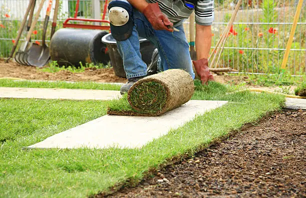

Chez Lucas Jardins, nous mettons notre expertise au service de l’engazonnement et de la pose de gazon pour offrir à vos extérieurs un tapis végétal dense et esthétique. Qu'il s'agisse de semis traditionnels ou de gazon en rouleaux, nous sélectionnons les solutions les mieux adaptées à votre sol et à votre climat. Grâce à une préparation soignée du terrain et à des techniques de pose maîtrisées, nous garantissons un gazon homogène, résistant et facile d’entretien, apportant verdure et fraîcheur à votre jardin toute l’année.